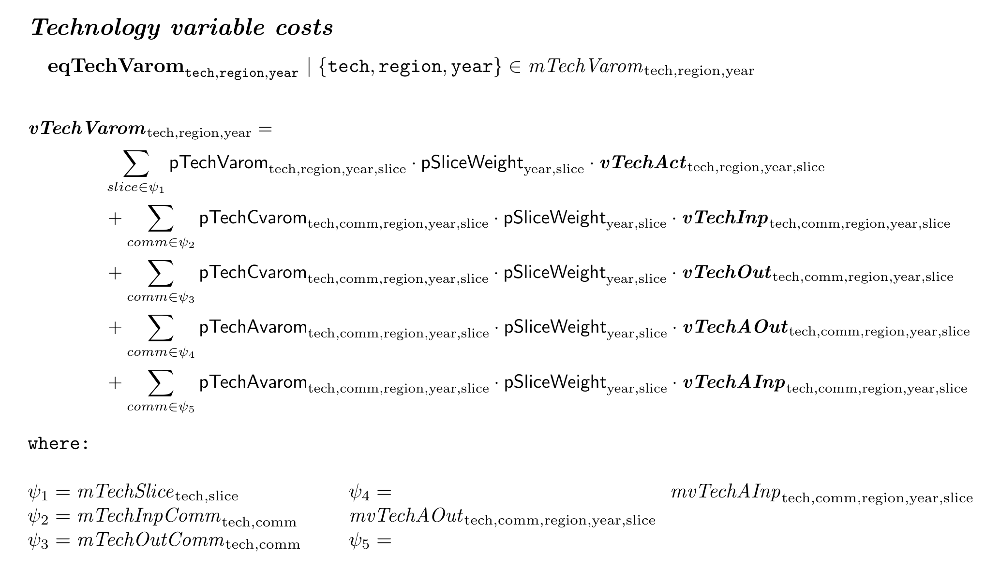
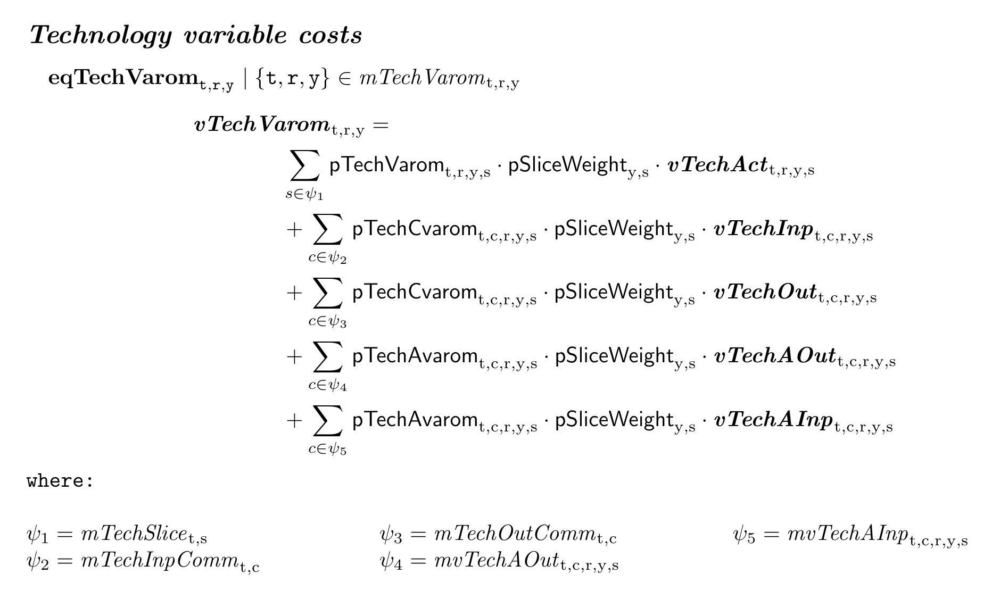
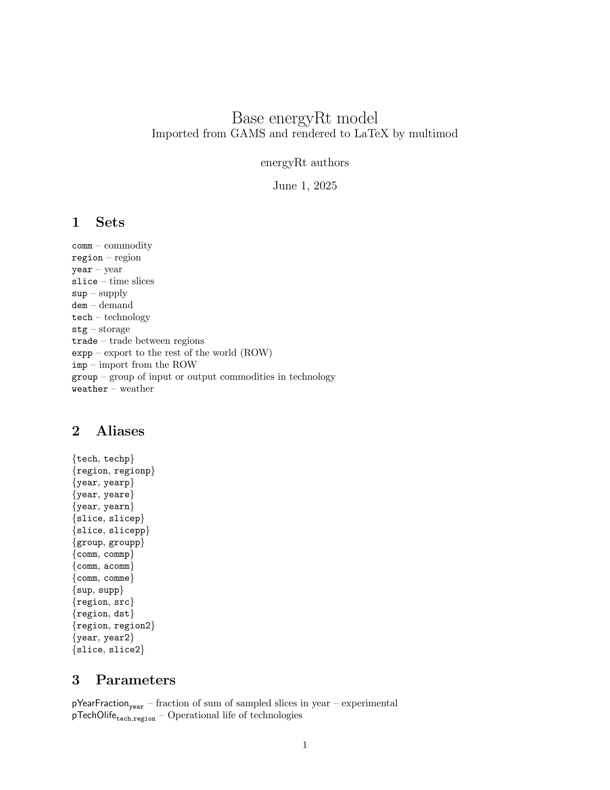

This vignette provides an overview of the current functionality of
the multimod package, which is designed to parse GAMS
models and convert them into a structured format for further analysis,
visualization, rendering to LaTeX, and other mathematical programming
languages.
Installation
The development version of the package is available for installation
from GitHub using the pak package. The package is not yet
available on CRAN.
# install.packages("pak")
pak::pkg_install("optimal2050/multimod", dependencies = TRUE)Example model
Download example model
gams_source <- file.path(tempdir(), "energyRt.gms")
# Download "energyRt.gms" GAMS model source file from GitHub
download.file(
url = file.path("https://raw.githubusercontent.com/optimal2050/energyRt",
"refs/heads/master/gams/energyRt.gms"),
destfile = gams_source,
method = "curl"
)
file.exists(gams_source)Parse model structure
Model structure is a named list of the model symbols: sets,
parameters, variables, equations, and other components. The parser reads
declarations to further identify the model elements used in
equations/constraints. Data and operations on data are not imported–the
parser focuses on the model structure, which is stored in an object of
class model_structure.
Convert to multimod
The model_structure object can be converted to a
multimod, either equation by equation or all at once. The
multimod’s model class is a structured representation of
the model using the Abstract Syntax Tree (AST) format. Every element of
a model, including operators, variables, sets and parameters, is
represented as an AST node.
# (Optional) Collect all symbols
symbols <- build_symbols_list(mod_str)
# analyze an equation
ast_node <- parse_gams_equation(mod_str$equations[["eqObjective"]], symbols)
ast_node
#> <AST equation> eqObjective
#> relation: ==
#> lhs: vObjective
#> rhs: sum(if (mvTotalCost[region,year]) {[region,year]}, *, vTotalCost[region,year], pPeriodLen[year] * pDiscountFactor[region,year], FALSE)Abstract Syntax Tree (AST)
AST nodes are the building blocks of multimod equations, creating a nested structures.
lobstr::tree(ast_node, max_length = 25, max_depth = 5)
#> S3<equation/multimod/ast>
#> ├─name: "eqObjective"
#> ├─desc: "Objective equation NPV of total..."
#> ├─dims: S3<dims/ast>
#> ├─domain: <NULL>
#> ├─lhs: S3<variable/ast>
#> │ ├─name: "vObjective"
#> │ ├─dims: S3<dims/ast>
#> │ ├─<NULL>
#> │ └─<NULL>
#> ├─relation: "=="
#> └─rhs: S3<func/ast>
#> ├─name: "sum"
#> ├─index: S3<when/ast>
#> │ ├─condition: S3<mapping/ast>
#> │ │ ├─name: "mvTotalCost"
#> │ │ └─dims: S3<dims/ast>
#> │ │ ├─S3<set/ast>
#> │ │ │ └─name: "region"
#> │ │ └─S3<set/ast>
#> │ │ └─name: "year"
#> │ ├─then: S3<dims/ast>
#> │ │ ├─S3<set/ast>
#> │ │ │ └─name: "region"
#> │ │ └─S3<set/ast>
#> ...Visualization
They can be visualized as a tree structure, which is useful for understanding the relationships between different elements in the model.
as_visNetwork(ast_node)Convert to multimod model object
The as_multimod method applied converts the entire model
into a multimod object, which contains lists of sets, parameters,
variables, equations, represented via AST nodes.
mod <- as_multimod(mod_str)
print(mod)
#> Model:
#> Sets: 13
#> Mappings: 251
#> Aliases: 17
#> Parameters: 151
#> Variables: 74
#> Equations: 117Equations are stored in $equations list, and can be
accessed by their names. Each equation is an object of class
equation, which contains the left-hand side (LHS) and
right-hand side (RHS) expressions and relation operator.
eq <- mod$equations$eqTechCap
print(eq)
#> <AST equation> eqTechCap
#> domain: mTechSpan[tech,region,year]
#> relation: ==
#> lhs: vTechCap[tech,region,year]
#> rhs: pTechStock[tech,region,year] - if (mvTechRetiredSt...
as_visNetwork(eq)LaTeX rendering
The as_latex function converts the multimod equation or
AST node into LaTeX format. The LaTeX output is a string that can be
printed or saved to a file.
eq$lhs # LHS of the equation - a variable
#> <AST variable> vTechCap
#> dims: [tech,region,year]Convert to character
as.character(eq$lhs)
#> [1] "vTechCap[tech,region,year]"Convert to LaTeX string
Render the entire equation
as_latex(eq) |> cat()
#> \begin{flushleft}
#> \subsection*{\textit{Technology capacity}}
#> \quad$\textbf{eqTechCap}
#> _{\texttt{tech},\texttt{region},\texttt{year}}$
#> $\mid\left\{\texttt{tech},\texttt{region},\texttt{year}\right\} \in \mathit{mTechSpan}_{\text{tech},\text{region},\text{year}}$ \\
#> \begin{equation*}
#> \begin{adjustbox}{max width=\textwidth}
#> $\begin{aligned}
#> &\bm{\mathit{vTechCap}}_{\text{tech},\text{region},\text{year}} = \\
#> &\qquad\qquad \mathsf{pTechStock}_{\text{tech},\text{region},\text{year}} - \left[\bm{\mathit{vTechRetiredStockCum}}_{\text{tech},\text{region},\text{year}}\mid \left\{\left\{\textnormal{tech,region,year}\right\}\right\} \in \mathsf{mvTechRetiredStock}_{\text{tech},\text{region},\text{year}}\right] \\
#> &\qquad\qquad + \sum_{yearp \mid \Biggl[ \mathit{mTechNew}_{\text{tech},\text{region},\texttt{yearp}} \land \mathsf{ordYear}_{\text{year}} \geq \mathsf{ordYear}_{\texttt{yearp}} \land \Bigl[ \mathsf{ordYear}_{\text{year}} < \mathsf{pTechOlife}_{\text{tech},\text{region}} + \mathsf{ordYear}_{\texttt{yearp}} \lor \mathit{mTechOlifeInf}_{\text{tech},\text{region}} \Bigr] \Biggr]} \mathsf{pPeriodLen}_{\texttt{yearp}} \cdot \Biggl[ \bm{\mathit{vTechNewCap}}_{\text{tech},\text{region},\texttt{yearp}} - \sum_{yeare \mid \Bigl[ \mathit{mvTechRetiredNewCap}_{\text{tech},\text{region},\texttt{yearp},\texttt{yeare}} \land \mathsf{ordYear}_{\text{year}} \geq \mathsf{ordYear}_{\texttt{yeare}} \Bigr]} \bm{\mathit{vTechRetiredNewCap}}_{\text{tech},\text{region},\texttt{yearp},\texttt{yeare}} \Biggr] \\
#> \end{aligned}$
#> \end{adjustbox}
#> \end{equation*}
#> \vspace{1em}
#> \end{flushleft}Saving an equation to a tex file can be done using the
write_latex method. This method can be applied to the
entire multimod object, or to a specific equation.
eq <- mod$equations$eqTechCapUp
eq_tex_file <- paste0("tmp/", eq$name, ".tex")
write_latex(eq, file = eq_tex_file)
tinytex::pdflatex(eq_tex_file)The as_latex and write_latex methods for
equations are aiming for formatting the latex output to fit the equation
to the page width and improve readability. Long equations are broken
into multiple lines, and long conditional expressions are remapped with
AST where class and display the replacement under the
equation under where header.
eq <- mod$equations$eqTechVarom
eq_tex_file <- paste0("tmp/", eq$name, ".tex")
write_latex(eq, file = eq_tex_file)
tinytex::pdflatex(eq_tex_file)
Replacing long names with aliases
There is also an option to replace long names of any simbols with
shorter aliases by using alias_map argument in
as_latex or write_latex methods. The aliases
are defined as a named list, where the names are the original symbols
and the values are the shorter aliases.
# Example of using aliases in LaTeX rendering
alias_map <- list(
region = "r",
comm = "c",
commp = "cp",
tech = "t",
year = "y",
slice = "s"
)
# eq <- mod$equations$eqTechVarom # the same equation as above
eq_tex_file <- paste0("tmp/", eq$name, "_short.tex")
write_latex(eq, file = eq_tex_file, alias_map = alias_map)
tinytex::pdflatex(eq_tex_file)
Render full model to LaTeX
The write_latex method can be applied to the multimod
model object to export the entire model to LaTeX format.
This will create a LaTeX file with all equations, sets, aliases,
parameters, and variables.
write_latex(mod, file = "tmp/example_model.tex",
title = "Base energyRt model",
subtitle = "Imported from GAMS and rendered to LaTeX by multimod",
author = "energyRt authors",
alias_map = multimod::example_model$short_aliases)
tinytex::pdflatex("tmp/example_model.tex")
Rendering back to GAMS
The idea of the multimod package is to provide a way to
convert the model structure back to GAMS, Julia/JuMP, Python/Pyomo, or
other mathematical programming languages. The current version has a
drafted implementation of the as_gams method, which
converts the multimod object back to GAMS code. This feature does not
create a fully functional GAMS model yet, it exports declarations only.
Connections with data is planned for future releases.
as_gams(mod$equations$eqTechCapUp) |> cat()
#> eqTechCapUp[tech,region,year]$mTechCapUp[tech,region,year]..
#> vTechCap[tech,region,year] =l=
#> pTechCapUp[tech,region,year];Render full model.
write_gams(mod, file = "tmp/example_model.gms")Summary
This vignette provides an overview of the current functionality of
the multimod package, which allows for parsing certain GAMS
models, converting them into a structured format, rendering to LaTeX,
and converting back to GAMS code. The package is still under
development, not all styles of GAMS models and syntax are supported,
more features will be added in the future. See the {dev-status} article for details.